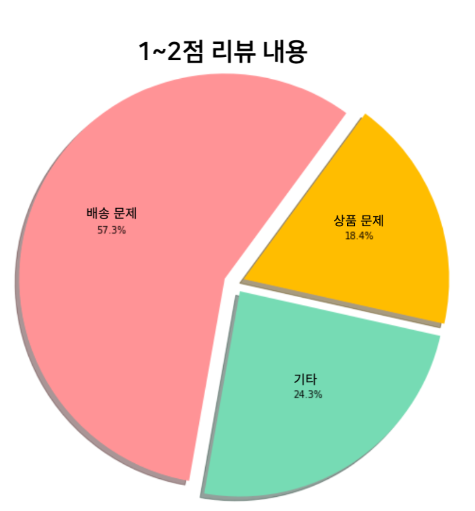
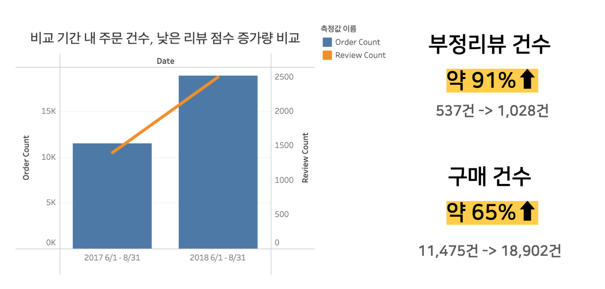
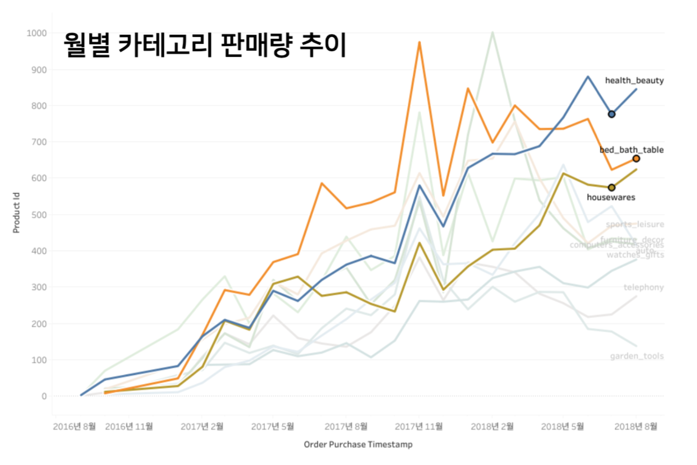
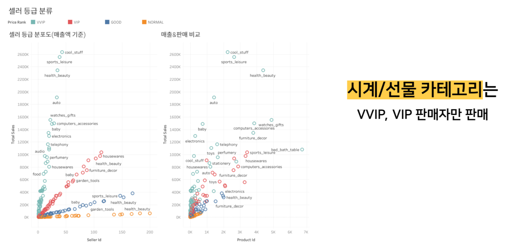
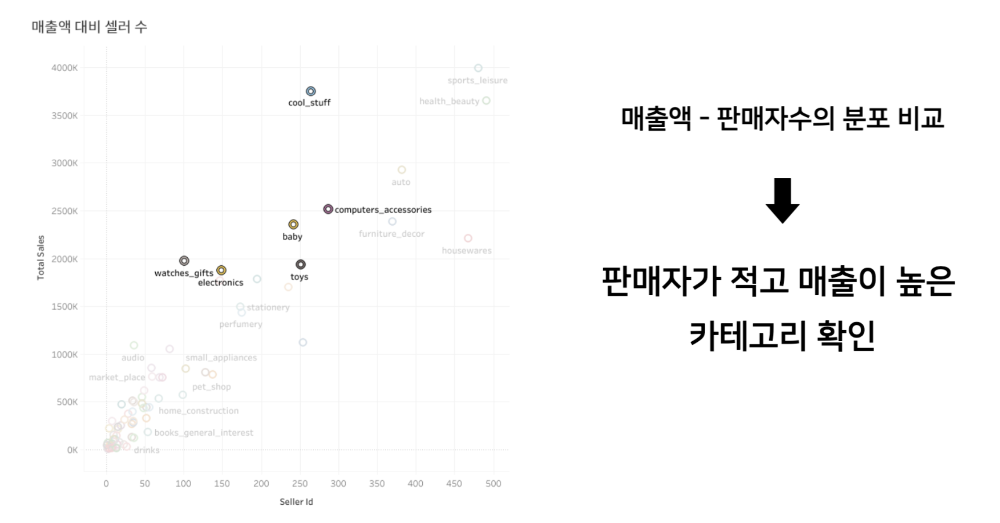

이커머스 매출 증대를 위한 데이터 분석
데이터 분석
고객 데이터 및 상품 데이터에 대한 분석
💡 고객 분석

- 낮은 점수(1, 2점)의 리뷰 중 57.3%가 배송 관련 리뷰를 남겼다는 사실을 확인하였고, 상품 자체에 대한 문제가 18%, 단순 변심이나 배송비가 비싸다는 등의 이유가 24%를 차지하고 있습니다.

- 구매 건수의 증가율에 비해 부정 리뷰 건수의 증가율이 높은 것으로 보아 배송 문제(오배송, 배송 지연, 제품 파손 등)가 매출 정체에 영향을 미쳤다고 판단할 수 있습니다.
💡 상품 분석

- 위 그래프는 총 판매량을 기준으로 상위 10개의 카테고리에 대한 월별 판매량 추이를 확인한 그래프입니다.
- 대체로 2018년 8월에 가까워질수록 판매량이 줄어드는데, 건강/뷰티 카테고리, 가정용품 카테고리는 판매량이 성장하고 있는 모습을 확인할 수 있습니다.

- 대부분의 카테고리는 모든 등급의 판매자가 동일하게 판매를 하지만, 시계/선물 카테고리는 VVIP, VIP 판매자만 판매하고 있었습니다.

- Watches_gifts와 Cool_stuff는 매출이 높으면서 셀러의 수가 상대적으로 적은 카테고리이기 때문에 초보 판매자들에게 적합한 카테고리라고 판단할 수 있습니다.
결론
고객 분석 및 상품 분석에 대한 결론
- 배송 관련 액션플랜
- 각 지역의 3PL 업체와의 협업을 진행하여 현재 발생하는 배송 문제를 해결하고 배송 효율화 달성을 위해 전반적인 물류 관리를 맡깁니다.
- 장기플랜이 달성되기 전까지 4PL 업체들을 통해 SCM(공급망 관리)업무까지 컨설팅을 받아 물류 효율화 작업을 진행합니다.
- 아마존, 쿠팡과 같은 물류 허브를 만들어 배송 시간을 효율적으로 단축합니다.
- 배송이 많은 주에는 하나의 허브를 만들고, 배송량이 적은 지역은 여러 지역을 하나로 묶어 허브를 만들어서 전국적인 물류 공급망을 형성합니다.
- 상품 관련 액션플랜
- 2018년 하반기에 건강/뷰티, 가정용품 카테고리를 묶어서 리빙 프로모션을 진행할 수 있습니다.
- 월별, 분기별, 연도별로 경쟁 강도가 낮은 카테고리에 대한 분석을 진행하여 유료 컨텐츠로 배포하거나 초보 판매자에게 컨설팅을 제공함으로써 수익구조 다각화를 할 수 있습니다.
⊳ 단기 플랜
⊳ 단기 플랜